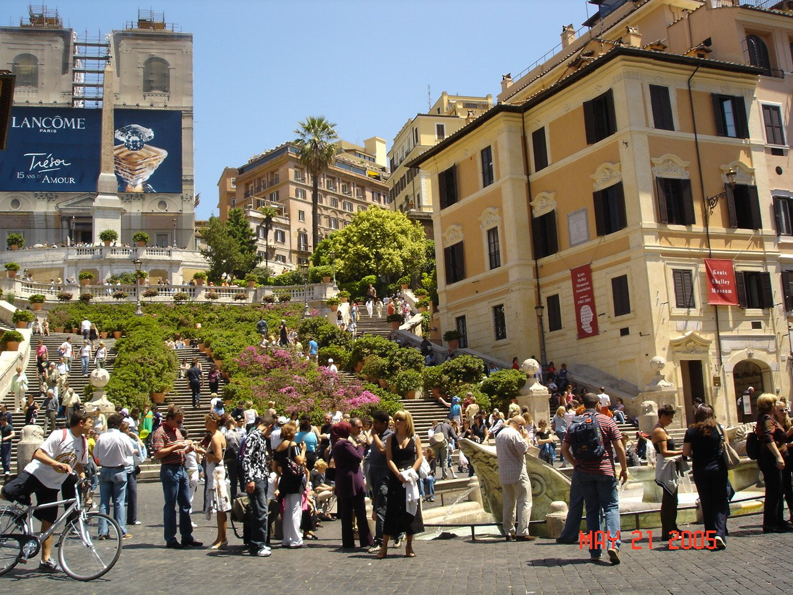
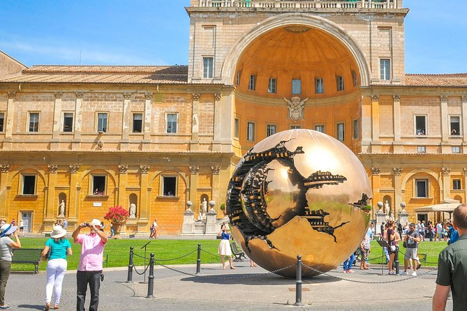
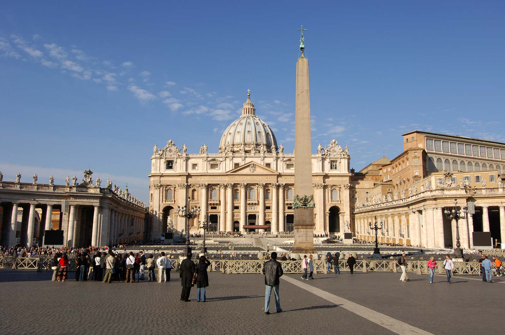
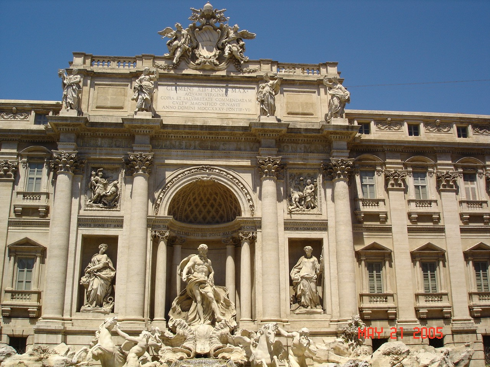
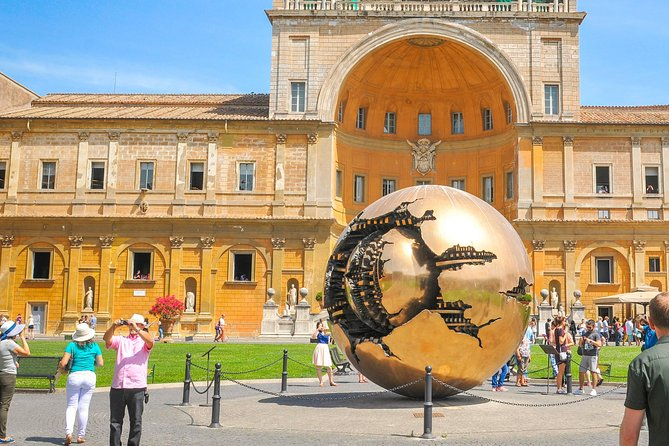
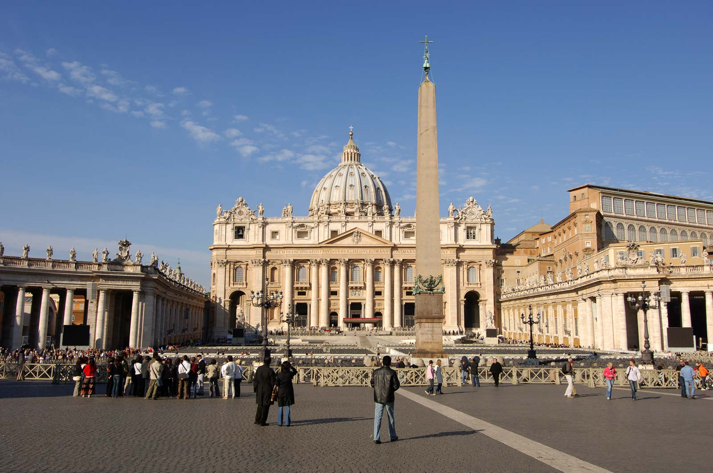
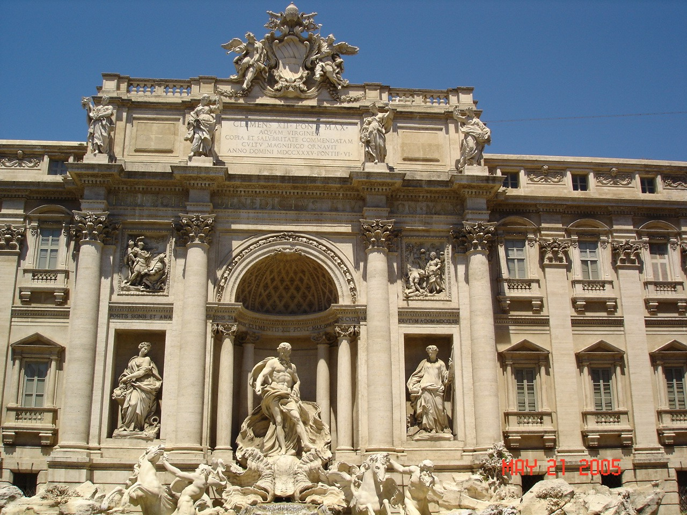

Vatican City
Pictures
 





Place
Is Malaysia's first international theme park, which opened in Iskandar Puteri, Johor, Malaysia on September 15, 2012 with over 40 interactive rides, shows and attractions.
How to get there?
Other Spots
The popular tourist spot in malaysia is the Petronas Twin Towers, in Kuala Lumpur. Also of the Batu Caves, in Selangor.asdasd